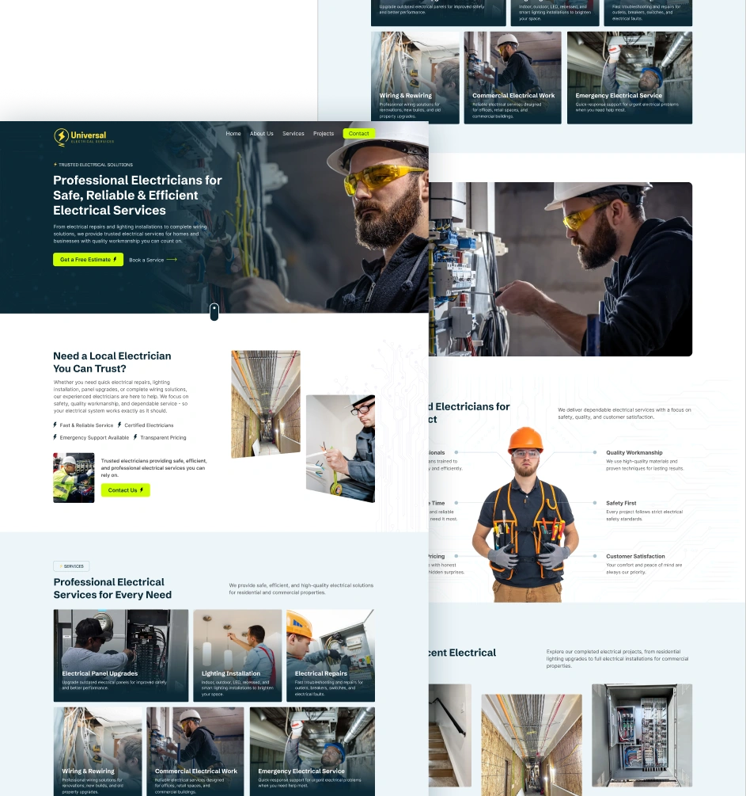
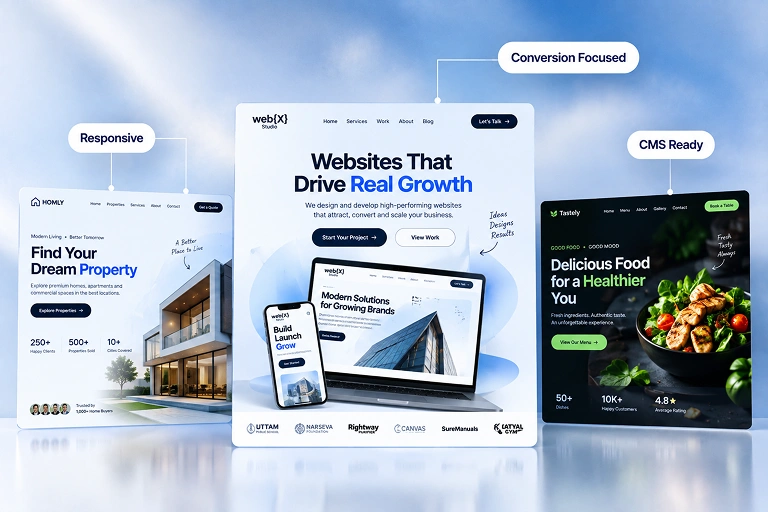
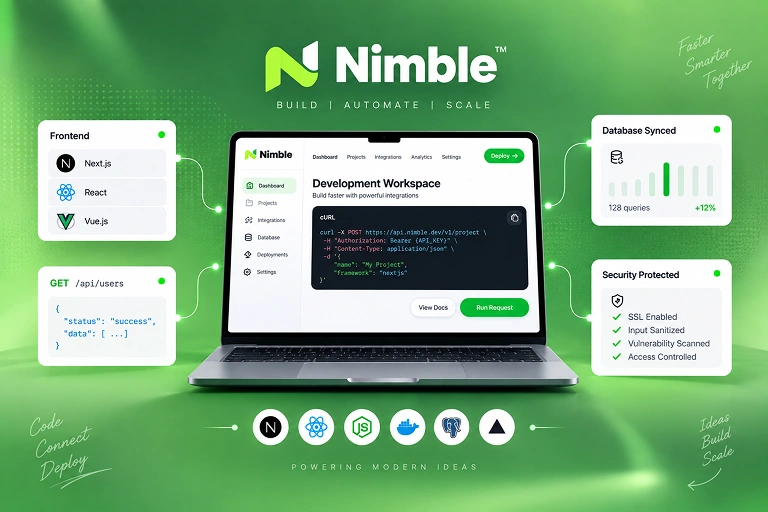
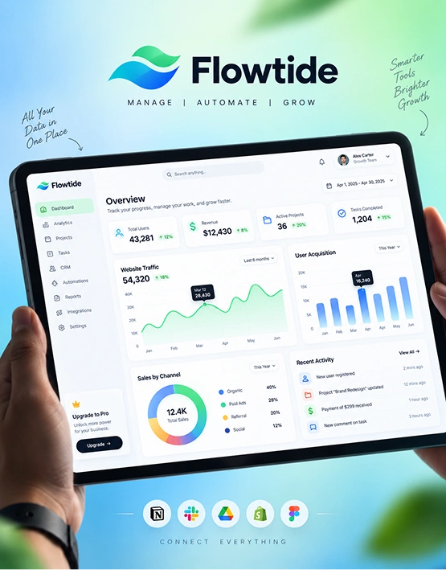
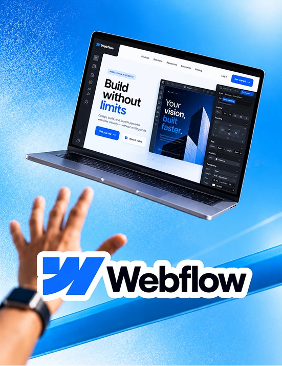
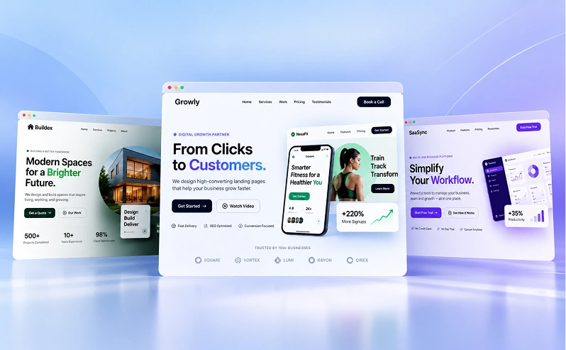

Everything
we build,
in one place
From a high-converting landing page to a custom ERP — design, development, SEO and the Figma-to-code conversions in between. Pick the service that fits, or tell us the outcome you are after.


Design And Build Better
Digital Products
From strategy through design, development and the SEO that keeps it found — one team, so nothing gets lost between the people who draw it and the people who build it.
UI/UX Design
Product design for SaaS and B2B — dashboards, onboarding and the multi-role screens people work in all day.
Web Design
A good website should do more than look good. We design pages that explain your offer clearly and guide visitors toward action.

Branding
Build a clear brand identity with consistent visuals and memorable messaging.
Web Development
Everything behind your product, from front-end and back-end development to APIs, databases and third-party integrations.

Ecommerce
Shopify and WooCommerce storefronts, from catalogue structure through to checkout.
ERP & Web Apps
Dashboards, ERP systems and B2B SaaS platforms — logins, roles and real data, built to stay fast as the records pile up.

Figma to Webflow
Pixel-accurate conversions with clean classes and a CMS your team can edit.

Landing Page Design
One page, one offer, one next step — built for paid campaigns and launches, and measured on the enquiries it brings in rather than how it looks.

Figma to Unbounce
Your design rebuilt as an Unbounce page, ready to test and iterate on.
SEO & Performance
Rank higher, load faster, convert more — technical SEO and Core Web Vitals built in from day one rather than bolted on at launch.
Figma to WordPress
Custom-built WordPress that is fast, SEO-clean and genuinely easy to edit.

Figma to Framer
Motion-rich Framer sites, hand-built with the CMS set up for your team.
How We Bring
Your Product To Life
From the first conversation to a design your developers can build from without a single round of guesswork.
Book a callUnderstand your product
We learn the product, the people buying it and the problem the design has to solve — before anyone opens a design file.
Plan the experience
Key features agreed, the structure mapped and the main journeys planned, so the screens that follow have something to answer to.
Design the product
User flows, wireframes, prototypes and high-fidelity UI — the stage where how it looks and how it works get decided together.
Refine the design
Reusable components, every breakpoint drawn rather than squeezed, and the rough edges taken off once real feedback lands.
Handoff to developers
Final files, prototypes, named components and specs, so the build matches the design without anyone having to interpret it.
A Design Team You Can
Always Rely On
Good design is the easy part to promise. What you actually need is a team that understands the goal, says what it is doing, owns the result and hands you work you do not have to check.
Experienced Designers
A team that has shipped real products since 2019, from first concept through to the polished interface people actually use.
Product-Focused Approach
Your users, your goals and your commercial reality all sit in the brief, so every design decision has a reason behind it.
Talk Directly To The Team
You speak to the people doing the work, not an account manager relaying it. Questions get answered by whoever drew the screen.
Flexible Engagement
A single project or ongoing monthly support — whichever suits where the product is and how fast it needs to move.
Clear From The Start
Every project is quoted as a fixed price before we start, so you know what is included and what it costs before any work begins.
Start With A Call
A free call first, to look at what you have and say plainly whether we are the right team for it — before anyone commits.
Sounds Like A
Good Fit?
Talk To Our Team
Got Questions?
We’ve Got Answers
If you are not sure where to start, or want to know whether this is the right fit, reach out and we will walk you through it.
Book an intro call
Let’s talk through your product, your timeline, and how Web{X} Studio can help.
What is the difference between UI/UX design and web design?
Web design is usually about the site people land on — the pages that explain what you do and ask for the enquiry. UI/UX design is about the thing they use once they are in: the dashboard, the signup, the settings screen, the flow with fifteen states nobody wants to draw.
Most companies need both, and they need them to agree with each other. There is a page for each — web design and UI/UX design — but it is one team either way, so the language, the type scale and the components carry across instead of the product feeling like a different company’s work.
How long does a UI/UX design project take?
A focused piece — a single flow, an onboarding sequence, a pricing page — is usually 1–2 weeks. A full marketing site is typically 2–4 weeks through design and build. A product interface with several user roles and real edge cases runs 4–10 weeks depending on how many screens have to exist before it hangs together.
You get a written milestone plan before we start, with the review dates fixed. The most common delay is not design — it is waiting on content and feedback, so nominating one decision-maker for approvals is the single fastest thing you can do.
Do you work with our existing developers?
Often, yes. When you already have a development team we design to what they build in — matching the component library, naming things the way the codebase does, and handing over files, prototypes and specs they can work from without having to interpret anything.
If you would rather one team carried it end to end, we build as well, and the handoff step simply disappears.
Can you redesign an existing site or product?
Yes, and it is a good part of what we do. A redesign starts by finding out where the current version loses people rather than by opening a blank canvas — which screens get abandoned, which features never get found, which questions support keeps answering.
That usually means the rebuild is smaller than expected. Fixing the three screens that are actually costing you conversions beats redrawing forty that were fine.
How much does it cost?
Every project is quoted as a fixed price agreed before any work begins — no hourly billing and no surprise change orders. The quote covers design, build, responsive testing and launch, with anything that recurs annually (hosting, premium plugins, paid assets) listed separately so you can see it.
Scope is what moves the number, so if your budget is fixed, say so on the first call and we will scope to it rather than quote past it.
What do you need from us to get started?
A conversation first: what the product does, who it is for, and what a good outcome actually looks like. After that, your brand assets if they exist, any current analytics or session recordings, and access to the existing site or staging environment.
None of it is a blocker. If there are no brand guidelines we work from what you already use. If the copy does not exist we write it.